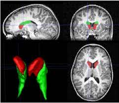

Hey there!
I am currently pursuing my graduate studies, and engaged in working on some exciting projects where I strive to use data-driven ways to solve problems. We all know how analyzing massive biomedical datasets has led to insightful discoveries on the function of living systems in health and disease in terms of personalized care, computational modeling, and designing of cloud-based technologies. This has tremendously augmented our ability to diagnose and treat diseases effectively. This still have a myriad of explorations and scopes of innovation, and my inclination toward a career in Healthcare AI stems from the very same rationale. With the industry boasting of further advances in personalized medicine and the development of predictive models, I find myself motivated and excited to continue to apply my computational biology, machine learning and data science skills and acquire knowledge for conducting perspicacious research in the field of personalized medicine and predictive disease modeling
Research Interests
Medical Image Analysis

Education
-
Johns Hokins University (Aug 2021 - May 2023)
- MSE in Biomedical Engineering
- Teaching Assistant: Gateway Computing: Python, Neurobiology Cellular and Systems
- Research Assistant: F. M. Kirby Research Center, Kennedy Krieger Institute
Advised by: Dr. Nirbhay Narayan Yadav
-
University of Mumbai (July 2017 - May 2021)
- B.E in Biomedical Engineering
- University Gold Medalist
- Department Ambassador 2021
- Undergraduate Thesis: Breast cancer Prediction using Machine Learning